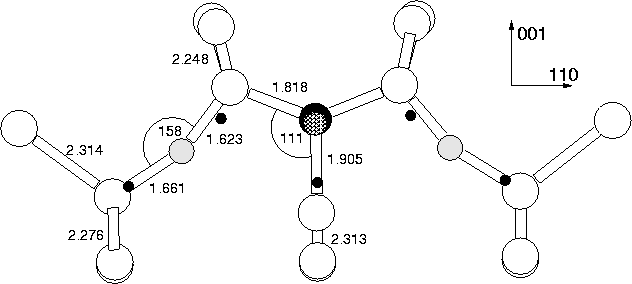
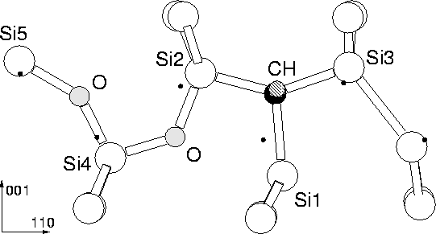

This was modelled using a 151 atom cluster in the +1 charge state, CSi79H69O2 (Figure 8.6). The presence of the (C-H) bond gives the defect C1h symmetry rather than C2v. However, more recent ENDOR symmetry analysis [10] has shown that NL10(H), the EPR/ENDOR signal associated with H-related shallow thermal donors (see Section 8.7) was misassigned using EPR to C2v symmetry. Using ENDOR they have shown it to be triclinic, with H lying along [110] perpendicular to the plane containing Oi, in agreement with this model.
|  |
The O forms assymetric bonds of 1.66 and 1.62 Å, the shorter bond
with the more positive Si atom shared with the (CH)i. The Si-O-Si
bond angle is 158 . C forms three strong Si bonds, the top two
of 1.818 Å and the bond with the core Si of 1.905 Å. The C-H
unit has a short C-H bond of 1.115 Å, and C moves out of plane by
0.159 Å. However, unlike NiO2i, this defect was not
itself a shallow donor, the level instead lying closer to mid-gap.
Changing the charge state of the defect to neutral or -1 through the
addition of 1 or 2 electrons respectively, had little effect on the
structure, and the level remained deep in the gap. In this case the
empty dangling bond on the Si was either singly (neutral) or doubly
(-1 charged) occupied. The C-H bond dilated (1.138 Å when
neutral, 1.145 Å when -1), and the distance between the C and the
core Si increased (1.965 Å when neutral, 2.001 Å when -1).
The O atoms were also pushed back into their bond centres (Si-O-Si
bond angles of 173
. C forms three strong Si bonds, the top two
of 1.818 Å and the bond with the core Si of 1.905 Å. The C-H
unit has a short C-H bond of 1.115 Å, and C moves out of plane by
0.159 Å. However, unlike NiO2i, this defect was not
itself a shallow donor, the level instead lying closer to mid-gap.
Changing the charge state of the defect to neutral or -1 through the
addition of 1 or 2 electrons respectively, had little effect on the
structure, and the level remained deep in the gap. In this case the
empty dangling bond on the Si was either singly (neutral) or doubly
(-1 charged) occupied. The C-H bond dilated (1.138 Å when
neutral, 1.145 Å when -1), and the distance between the C and the
core Si increased (1.965 Å when neutral, 2.001 Å when -1).
The O atoms were also pushed back into their bond centres (Si-O-Si
bond angles of 173 ), and all of these shifts are consistent
with increased charge in the defect core. These results show that, by
itself, the (CH)iO2i defect in this configuration is not a
single shallow donor. We deliberately breached the defect symmetry
after relaxation but in all cases it returned to the symmetric
structures described above with the same energies.
), and all of these shifts are consistent
with increased charge in the defect core. These results show that, by
itself, the (CH)iO2i defect in this configuration is not a
single shallow donor. We deliberately breached the defect symmetry
after relaxation but in all cases it returned to the symmetric
structures described above with the same energies.
|  |
We next examined the stability of this defect and found it to be less
stable than the alternative structure with both oxygen atoms on the
same side of the C (similar to its unhydrogenated cousin,
Ci-O2i, responsible for the `P-line' PL absorption). This
lop-sided defect structure is 1.36 eV more stable than the symmetric
one in the neutral charge state (1.33 and 1.76 eV in the +1 and -1
charge states respectively). This also has a deep donor level rather
than a shallow one. The structure is shown in
Figure 8.7. We again examined the three possible
charge states of this defect, +1, 0, or -1, corresponding to different
populations of the Si p-type dangling bond in the core of the
defect. In the +1 charge state the core Si stayed close to the
 001
001 axis, but in the neutral and -1 charge state it bows away
from the neighbouring oxygen atom, allowing it to localise the filled
p-type orbital as far from the oxygen lone-pairs as possible. In
this respect its behaviour mimics that of NiOi, and presumably
the exact analogy, (CH)iOi would also behave in a similar way.
axis, but in the neutral and -1 charge state it bows away
from the neighbouring oxygen atom, allowing it to localise the filled
p-type orbital as far from the oxygen lone-pairs as possible. In
this respect its behaviour mimics that of NiOi, and presumably
the exact analogy, (CH)iOi would also behave in a similar way.
The lack of shallow donor properties for (CH)iO2i in the C2v configuration is initially surprising, given that it is iso-electronic with the NiO2i shallow thermal donor. However the (CH) unit is less electronegative than Ni and so the core Si atom is less polarised. This in turn provides less driving force to draw the oxygen atoms inwards and indirectly compress the gap level. In addition the back-bonds of (CH)i are not as dilated as those of Ni, and so there is less strain energy to be gained from placing the oxygen atoms next to the (CH)i; this is why the oxygen atoms prefer to sit on one side where they gain energy through quadrapole interactions through their shared lattice Si.
However the C1h defect could still act as a STD core, and would become stable with the addition of further oxygen atoms, similar to Ni-O4i. This would also help to compress the defect core. We therefore relaxed (C-H)i-O4i, and found that it possessed a single shallow donor level. The Kohn-Sham eigenvalues are shown in Figure 8.10, showing the donor level. (CH)iO4i is examined further, below in Section 8.8.
In conclusion, it appears that CiHO4i is a stable shallow donor defect, possesses C1h symmetry and contains a C-H bond lying along [011]. There is very little spin-polarised density residing on C or H. The defect core, CiHO2i is more stable in a C1 configuration similar to CiO2i. In n-type material the (CH)iO2i defect would be either neutral or -1 charged.